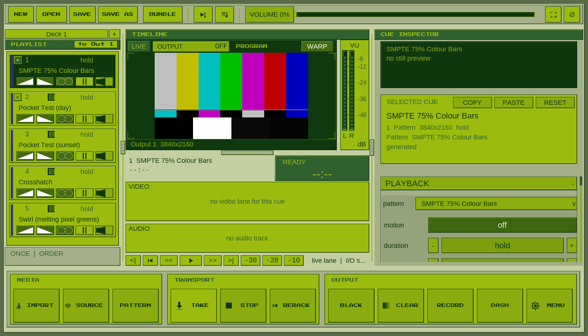
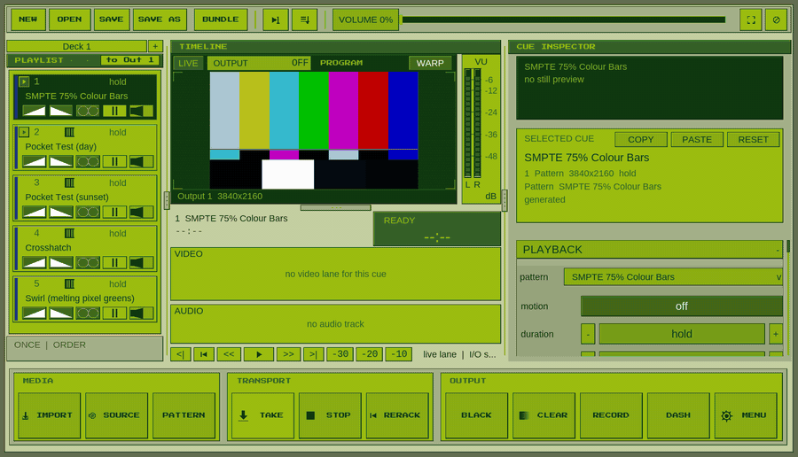
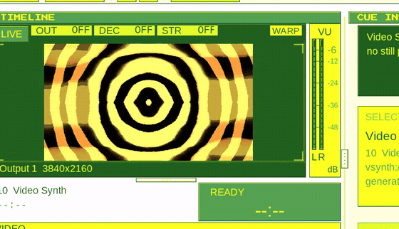
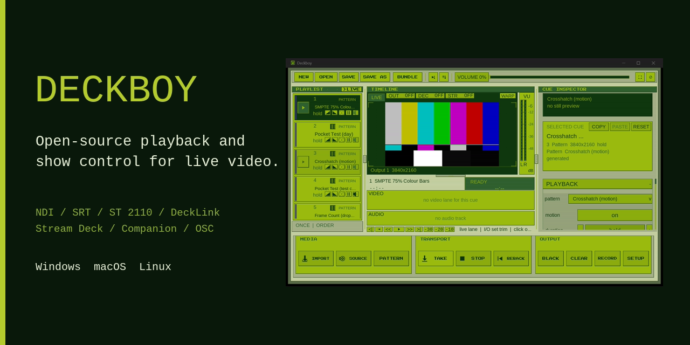

The facts
| Name | Deckboy |
|---|---|
| What it is | Cue-based media playback and show control for live video |
| Price | Free. No paid tier, no account, no licence server, no telemetry |
| Licence | GPL-3.0-or-later |
| Platforms | Windows, macOS and Linux, from one show file. Spout is Windows only. See the manual for platform and hardware requirements |
| Built with | Native C++ on SDL3, decoding through FFmpeg in process |
| Made by | Utopian Academy |
| Download | github.com/Utopian-Academy/Deckboy/releases/latest |
| Source | github.com/Utopian-Academy/Deckboy |
Copy, ready to paste
One line
Deckboy is a free, open-source video cue deck for Windows, macOS and Linux: clips, slides and live sources in one running order.
One paragraph
Deckboy puts video clips, stills, slide decks and live sources in one cue list. An operator selects the next cue and takes it to a separate programme output, with fades, loops and hold-last-frame. Send the programme to a screen, over NDI, or to an SRT or RTMP stream, and record it while it runs. A Stream Deck, Bitfocus Companion, OSC, MIDI or timecode can drive the show. Deckboy runs on Windows, macOS and Linux and is free under GPL-3.0-or-later, with no account, subscription or telemetry.
A short social post
Clips, slides and live sources. One cue list. Deckboy is a free, open-source video cue deck for Windows, macOS and Linux. Take the next cue to a separate screen, send it over NDI, or stream and record it. https://utopian-academy.github.io/Deckboy/
Choose the workflow
- For event and theatre operators: select the next clip or slide while the audience sees the programme output. Start with live events or theatre.
- For video engineers: send a cue list to an NDI receiver, or bring an NDI source into the list. Start with NDI input and output.
- For streaming crews: take cues to an SRT or RTMP output and keep a local programme recording. See outputs and recording.
NDI needs the NDI runtime supplied with NDI Tools. SDI needs compatible Blackmagic hardware and its driver. The manual describes source, output and platform requirements.
More to explore
Deckboy hosts your own VST3 effects and instruments inside a cue's audio chain, so the reverb or channel strip an engineer already owns works on a cue beside Deckboy's own effects, and an instrument plays from a MIDI keyboard or the computer's. A window cue takes any application on the show machine to air at its own full resolution, following it as it moves, with anything in front of it kept out of shot — so the operator carries on working on the same computer. A rack of effects built from physics rather than filters: schlieren imaging, Chladni figures, a wave equation, crystal grain growth, retinal persistence. And a pair that crosses between picture and sound — one plays the picture through an audio chain, the other draws the played audio through the picture.
Images
Right-click to save, or link them directly. Full resolution behind each one.










Video and audio
- The trailer — 61 seconds, 1920×1080, H.264. How it was made: every shot is Deckboy 0.99.397's own recorded output, driven over its control port. Music by YMCK, used with permission; footage © Blender Foundation (CC BY 3.0) and NASA. Share or embed it as it is, but please don't re-cut it.
The application is GPL-3.0-or-later. Video music and third-party footage have their own credits and terms; see the trailer credits before reusing those assets.
Things people get wrong
- It is not a switcher. It is a source and a player; it pairs with a switcher rather than replacing one.
- It is not a projection-mapping suite, though it has warp, keystone and edge blend per output.
- There is no paid version, no "pro" tier and no upgrade path. This is the whole application.
- The builds are not code-signed. Windows and macOS may show a notice on first run; follow the platform-specific instructions on the release page.
Try it without installing anything
- Databend a picture in your browser — the real effect, running on your own photo.
- Generate test patterns at any raster, including a numbered LED panel map.
- Check the screen in front of you.